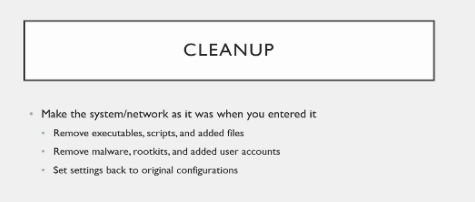

its from pentest persective

fromm red team perspective cleanup means u were never there a bit deeper liek delete from log files and system events
so that u are harder to crack fro forensics
bt dont worry abt this from pentester